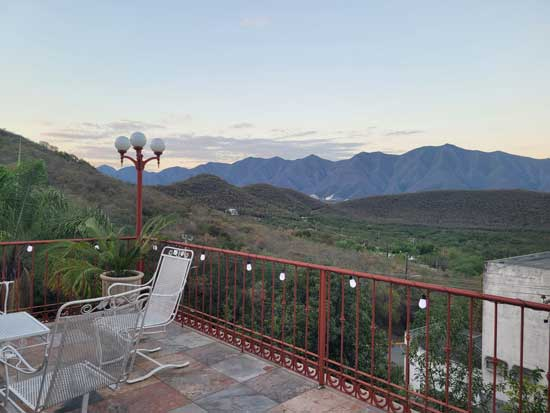
We started our most recent Mexico adventure by flying into Monterrey and then traveling to the nearby small town of Santiago. There we visited our good friends the Chodzkos. This is a view from their stunning multi-level patio that overlooks the mountains.
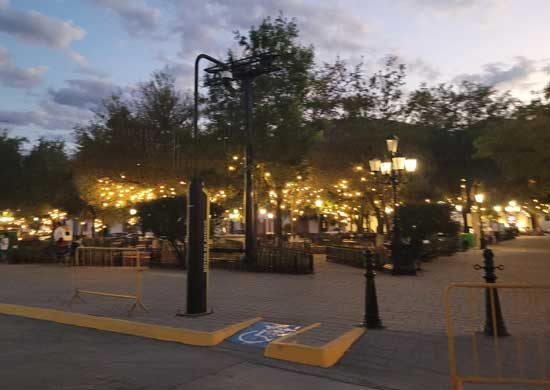
In the downtown plaza area of Santiago, it was a very beautiful spot. Later that police summons station would factor into our trip when Eric pressed the "Panic" button thinking it was the cross walk request button. Awkward!

The beautiful church just off the town plaza.

Eric and I enjoyed a lovely meal with the Chodzkos. It was such a treat to eat outdoors when it was snowing back home.
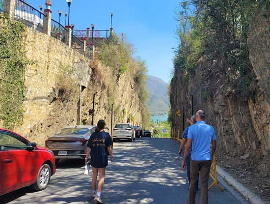
The next day we enjoyed sight-seeing around the town center.

There are a lot of interesting rock formations in the area. Years ago, Eric attended a geological field trip in this very same town.

Next we visited the Great Lookout Plaza.

It had a nice view of the reservoir.

Santiago photo spot.

Beautiful mosaic tiled steps.

The very, very old part of the church.
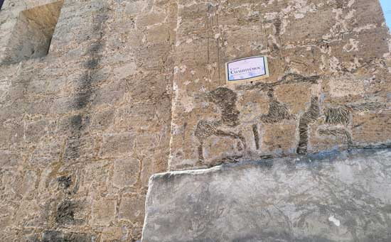
Closer view of the old part of the church.
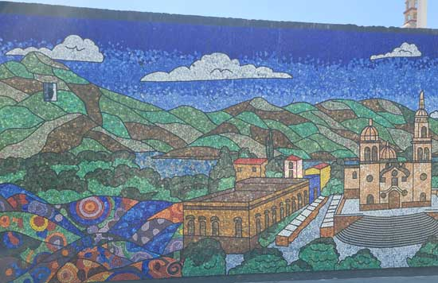
More beautiful mosaics near the center of town.
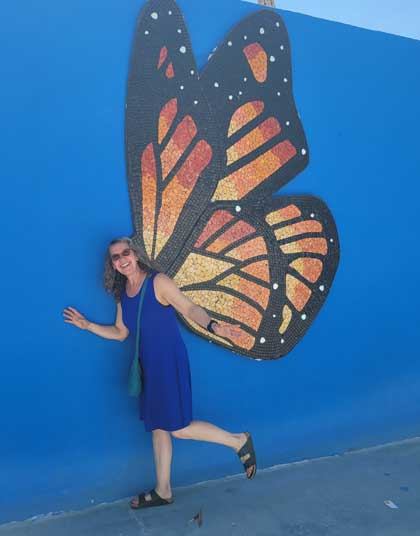
Eric got me to pose like this, I'd never think of it myself!

Following the Chodzkos to more sights.
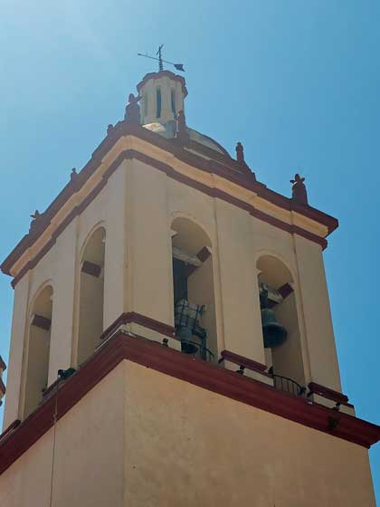
Some of the old bells in the church bell tower.
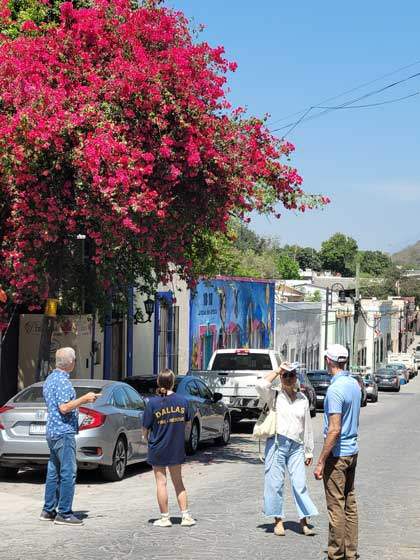
Decisions, decisions.

Now we're down on the shore of the reservoir for a great lunch.
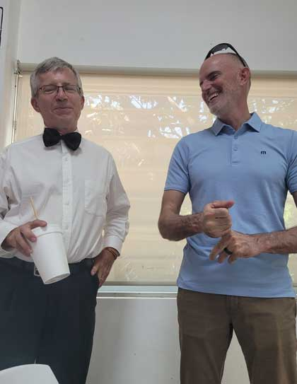
Next was an afternoon at the local community center where the Chodzkos participated in a dance recital featuring local cultural dances.
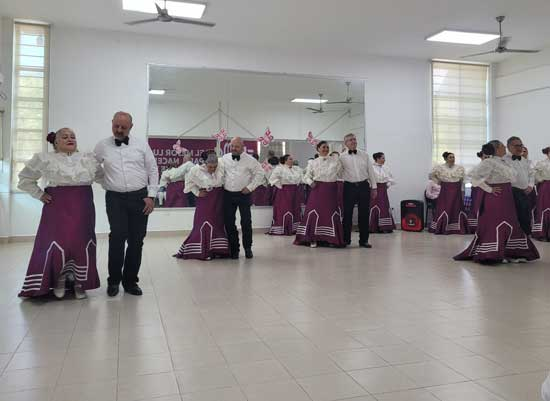
Jim & Lupita, near center here, stole the show with their fine dancing skills.
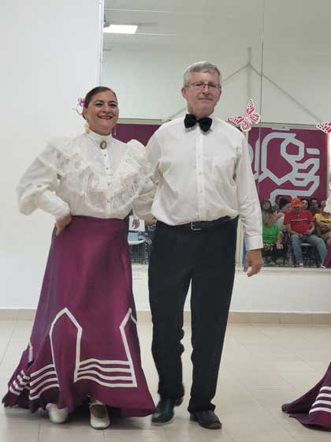
Darius came out to guest on a couple of songs.

Miranda was no stranger to pubic dance, you could tell! She did fantastic.
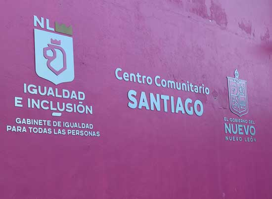
The community center sign.
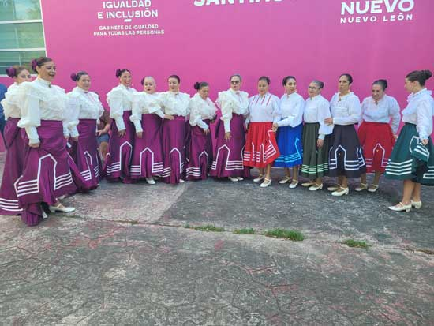
I took group photos of everyone with Lupita's camera shortly after this.
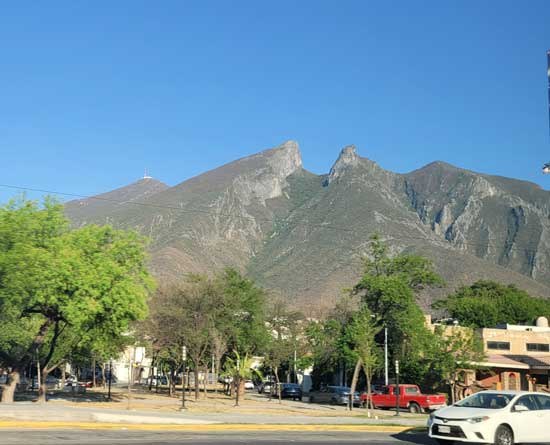
That evening we headed back to Monterrey to explore the city. This is a famous local landmark well known because it looks like a saddle.
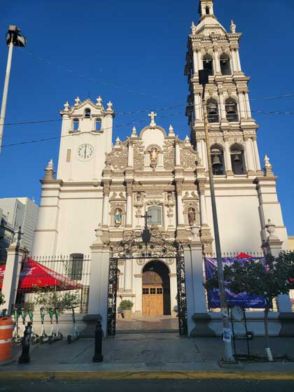
Beautiful cathedral. Cassandra had her 15th birthday celebration here.

There were miles of public walkways and a very long canal system akin to San Antonio's.

We took a cruise on the canal and saw lots of cool sights.

Some of the many water features along the canal.
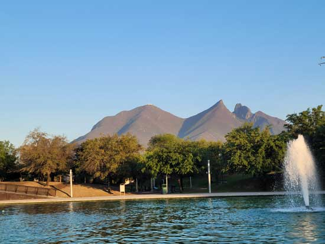
Views of the mountains from the canal.

Much of the park land used to be a huge foundry that made steel for ages. This is one of the crazy huge buckets that used to be used in the forging process.
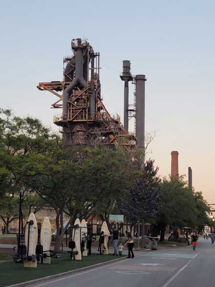
Some of the old foundry is now a museum and restaurant. We ate there.

Eric and Jim trying out some of the exercise equipment along the path.
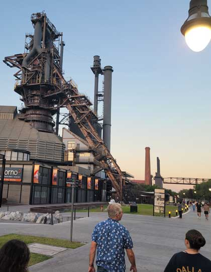
Heading toward the old foundry and the restaurant where we had dinner.
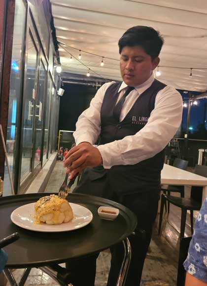
The waiter cutting up our lovely cauliflower appetizer.
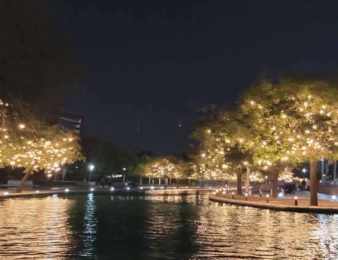
We caught the last boat back. Thankfully! As it would have been a LONG walk.

The next day we had a treat - Lincoln came with us! He is SUCH a good dog.
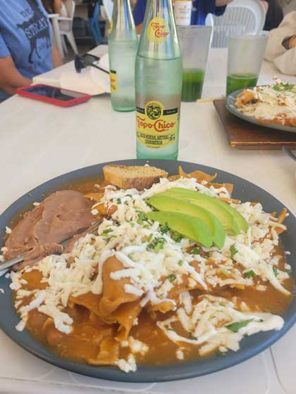
Breakfast out for chilaquiles - as fun to eat as it is to say!
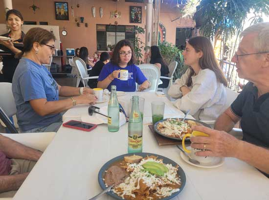
One of the ladies from the dance group was there and recognized me in the restroom, I felt famous!
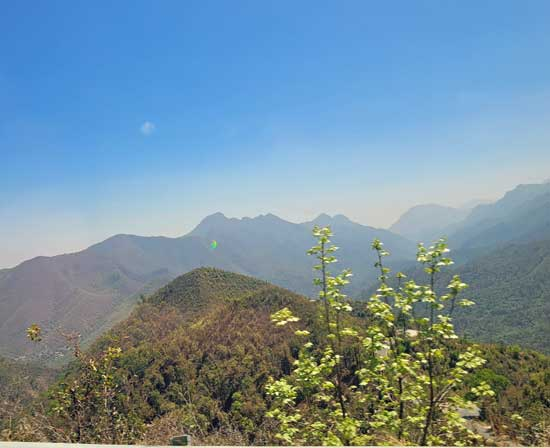
Then we drove up into the mountains for a day of exploring.


We had to stop at this climber-run coffee shop at a famous rock climbing area, El Salto.
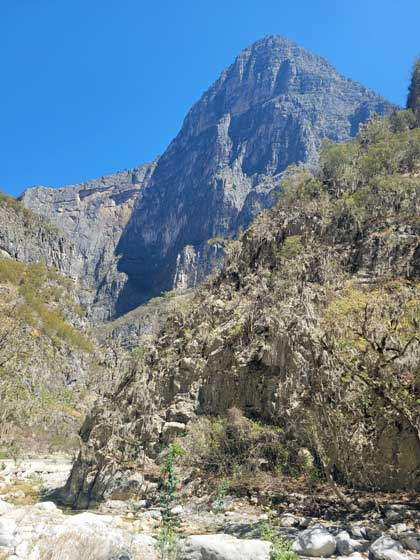
Stopping along the way to admire a little river running through the valley.

Eric and Lincoln are scoping it out, while kids swim in the small pool above.

Checking out the geology, no doubt.
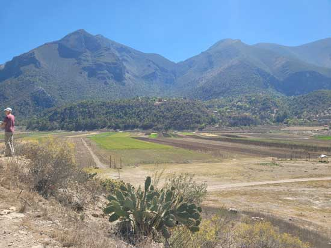
This used to be a lake and now at some times is full of sunflowers.

Next we took a short hike up into the climbing area, just to tease Eric about what he was missing.
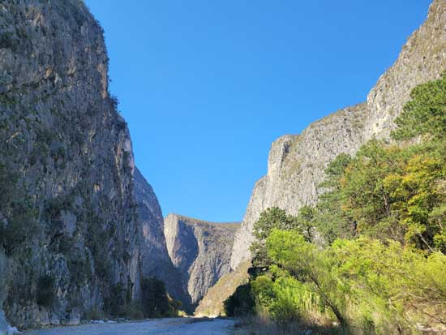
Heading into El Salto.
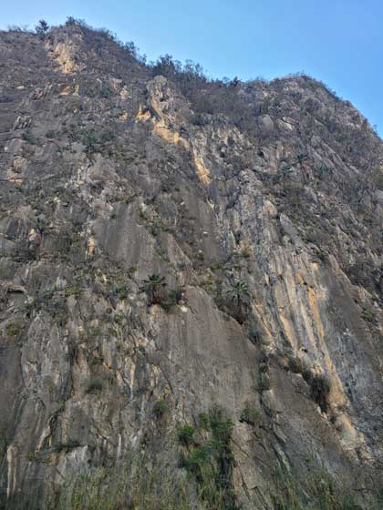
Looking up at some of the very cool rock.

Here I left Eric & our gang in the shot for scale.
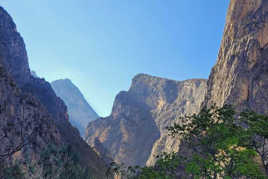
Beautiful rock and beautiful lighting.
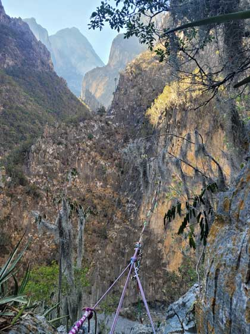
The scariest slack line ever! It had about 150 foot drop!
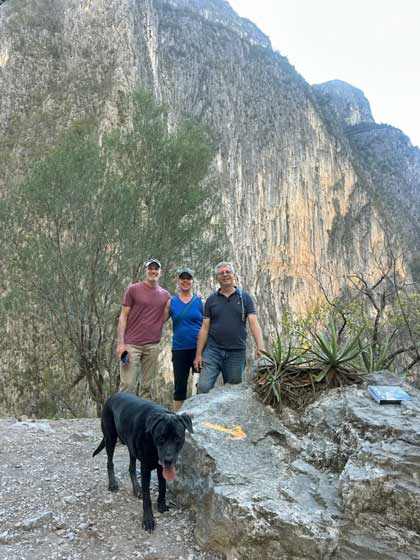
Group photo.

Again, with Lincoln looking funny with the wide-angle view.

Eric went to El Salto and all he got to climb was this tiny boulder!

Channeling his inner Karate Kid
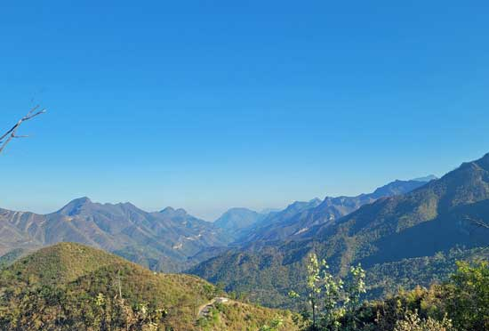
Heading down out of the mountains.

A famous waterfall in the area was closed for the day, but we felt that should no deter us. We climbed over a guardrail and got a glimpse of the falls.
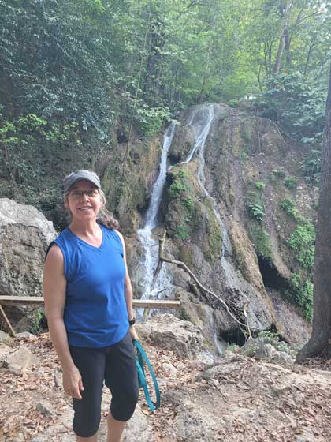

Down there is where you are supposed to view it from, but we were too late for that.

A lovely meal out for our last dinner in Santiago.

The next day we took an intra-Mexico flight to Cancun, then a car trip to Riveria Maya to stay at Moon Palace Resort. My third visit to this resort, which hosted Hootiefest in 2022 and 2023.
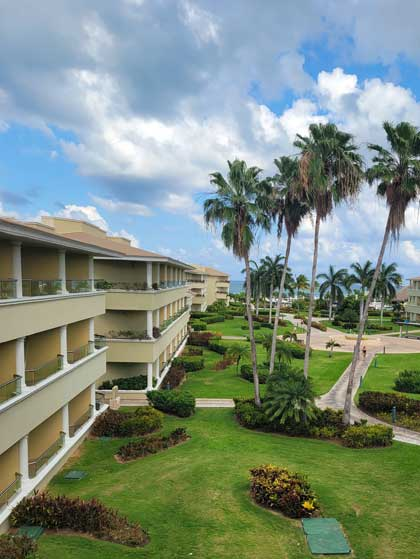
Different room, similar view as my previous visits. Always great!

Our first glimpse of the beach.
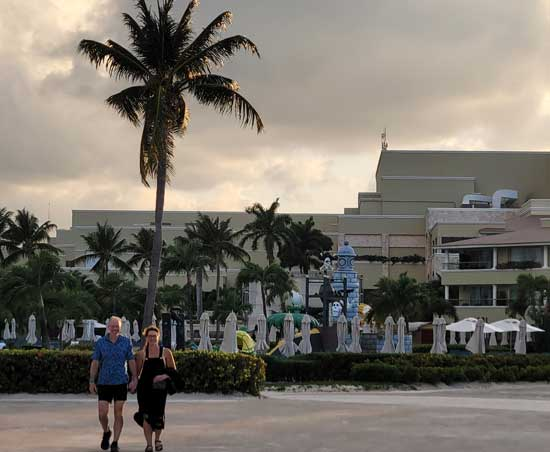
And our first glimpse of Larry & Lisa, who arrived 2 days prior to us.
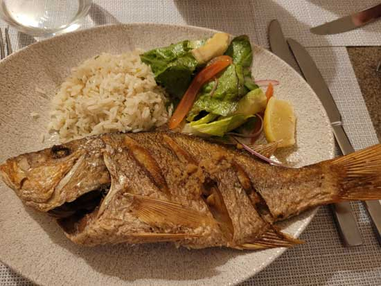
Our first dinner. All meals at Moon Palace are excellent. This one tasted better than it looks!
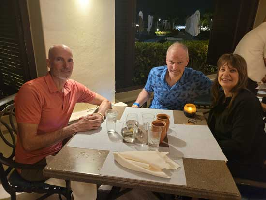
The gang, enjoying beachside dining at the seafood restaurant.

The show for that evening was fire dancing, which sounded better than it was.

A rare moment of catching Eric and Larry relaxing. They are not relaxers. Fortunately, there were many activities for them to do after their obligatory 5 minutes by the pool.

Me however, I could sit here all day.

Eric, testing out the temperature of the ocean. I think it's cold!

Larry & Lisa joining me in staying on shore.

There was a multi-day Indian (dot, not feather) wedding going on all week. Each day all the guests dressed in a different, matching color. Obviously, this was yellow day.

Eric tried the surfing simulator. He did well at first.
I have two videos - one of his
second fall
and one of the fall that gave him
whiplash!

The ice cream man is a very famous part of this resort's experience. He loves the ladies!

A flaming meal at the Indian restaurant.
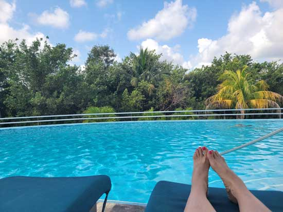
The gang discovered there is a very under-used pool at the golf course, so we used it!
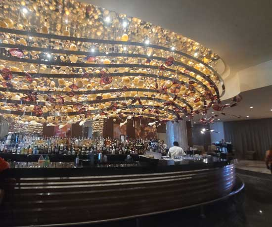
Next we made the mistake of doing their sales tour of the fancy part of the resort. It wasn't fun.
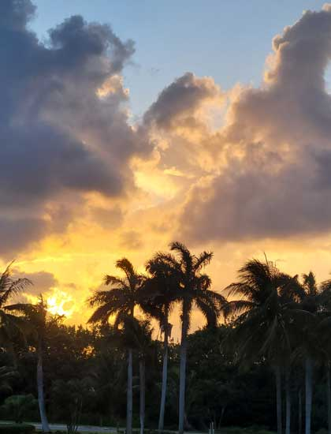
Beautiful sunset over the resort. Next up was Joya, a Cirque du Soleil show. Sadly, Lisa got sick that night so they had to miss it.

They made us arrive 2 hours early, a cheap ploy to make us buy food & drinks at the theater. The one bottle of water we bought cost $8!! But the band was great.
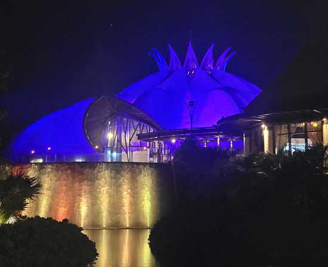
Heading into the theater.

The second warmup band was great also.

A view of the show in progress.
My favorite act was a Chinese acrobat who was lowered from the ceiling onto someone's table for her act. Most of the others didn't photograph well.

A blurry shot of one of the other amazing acts.

Out of order shot of us on the beach.

Our last evening together in Mexico, hanging in the lobby bar.